Before you begin
- Complete CoP 5-2.
- Three Paths active.
Starting point
Carbuncle’s ??? · La Theine Plateau · G-6
People in this mission


Walkthrough
- Inspect the G-6 ??? until the scene includes Tenzen. Unrelated Carbuncle quest scenes do not advance this path.
- Spiral: enter Pso'Xja from Beaucedine J-8. Pass sixteen Stone Doors, defeating each triggered Gargoyle. Move everyone through promptly after each victory; the doors close again. A THF can try lock-picking instead.
- After the last door, take the elevator down and inspect the Avatar Gate at H-8.
- Branded: speak to Monberaux (Upper Jeuno G-10) for his Envelope, then Pherimociel (Ru'Lude Gardens G-6), then Monberaux again.
- Pride and Honor: leave Upper Jeuno into Batallia Downs. Just outside the city gate, turn left and inspect the ??? twice to receive the Delkfutt Recognition Device.
- At Lower Delkfutt's Tower, inspect the first-floor northern Cermet Door at H-5. Defeat Disaster Idol and inspect the door again before zoning.
- And the Compass Guides: enter Pso'Xja from Beaucedine H-10. Keep the outer wall on your right until I-8; turn west and drop, continue south through the hall, then turn right toward the elevator. Descend and inspect the Avatar Gate.
- Report to Cid in Metalworks H-8. Complete the other paths if they remain.
Battle and progress notes
- The two Pso’Xja entrances are J-8 and H-10; using the wrong tower will not reach the required gate.
- The sixteen-door tower historically caps at 50; the final tower is uncapped. Avoid magic near magic-aggressive enemies.
Completion and reward
Tenzen’s Ally title; Tenzen branch completion.
Area maps
Open a zone below, then select a map to enlarge it. Match the named floors and grid coordinates in the steps; these are reference area maps, not a live position tracker.
La Theine Plateau


Beaucedine Glacier


Pso'Xja

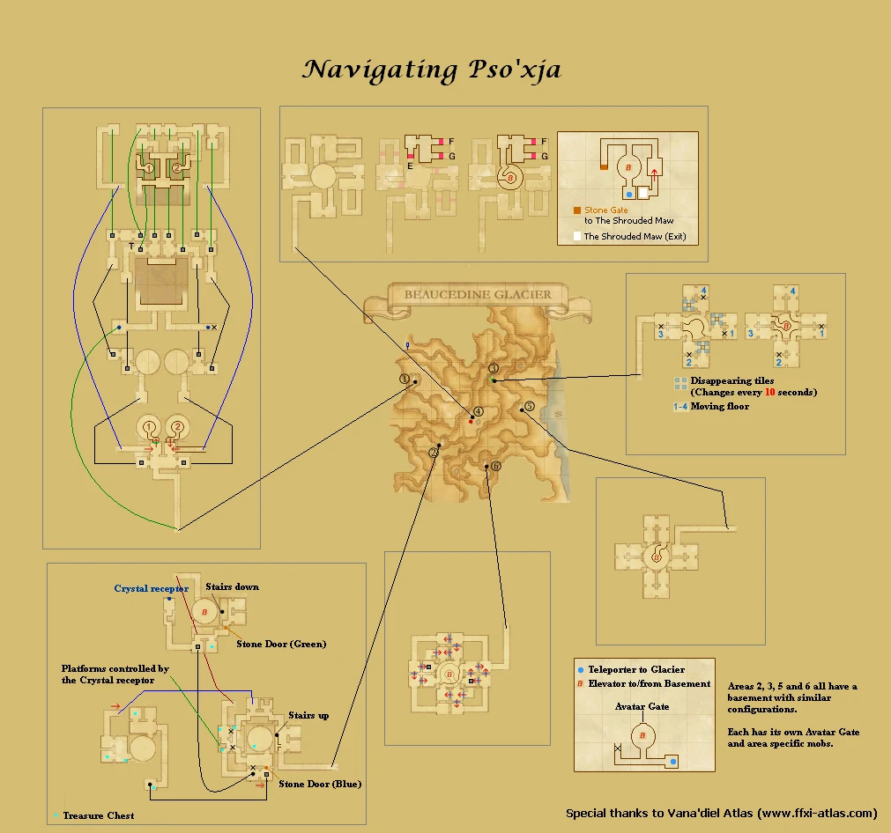


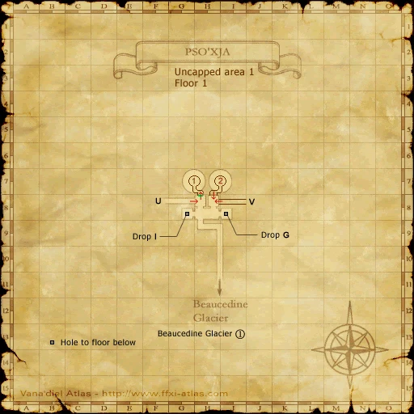


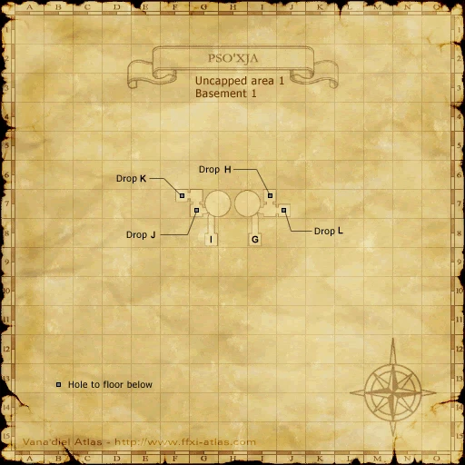


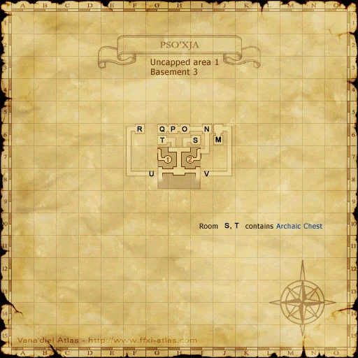


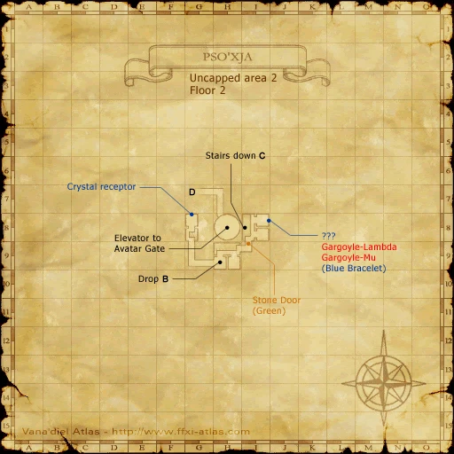


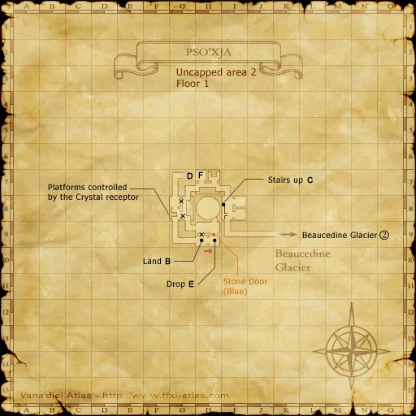


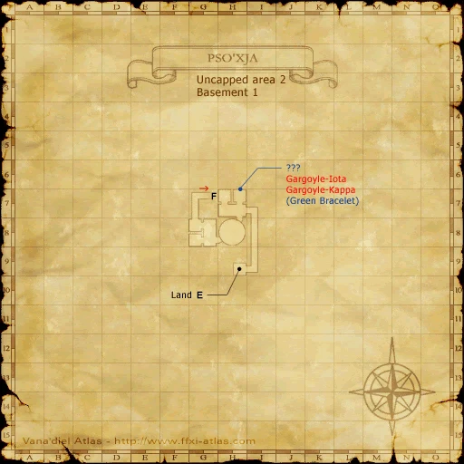


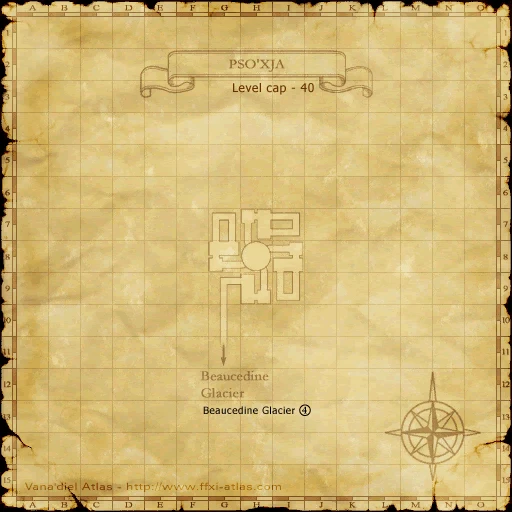


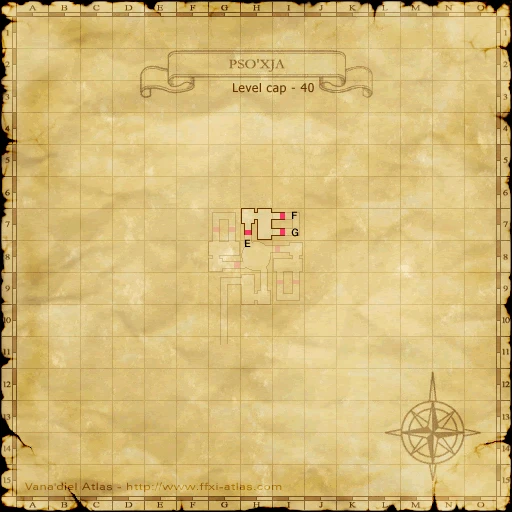


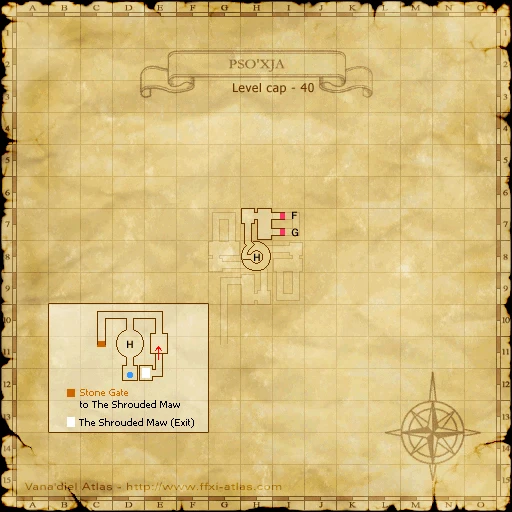


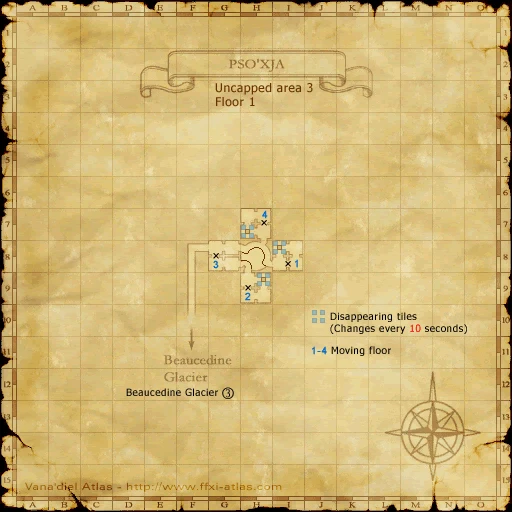


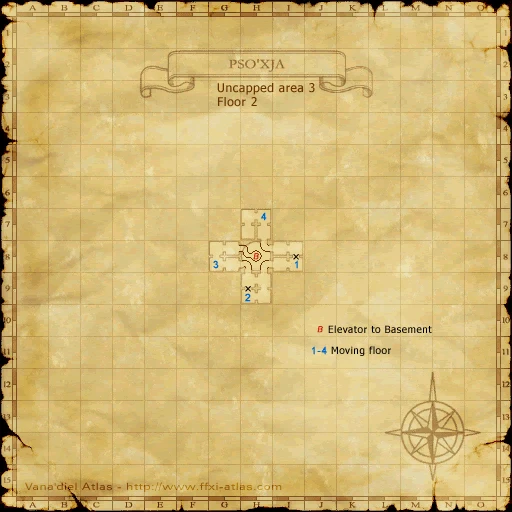


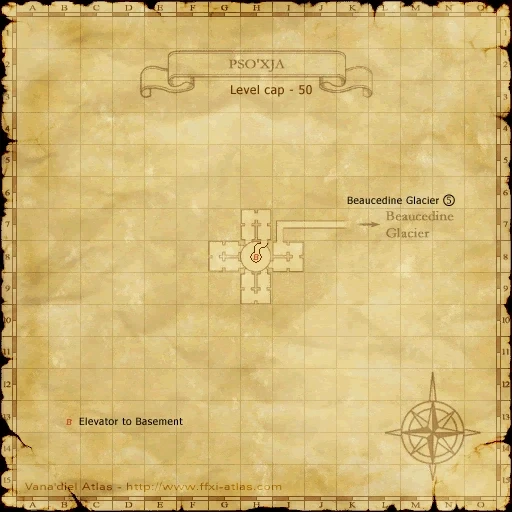


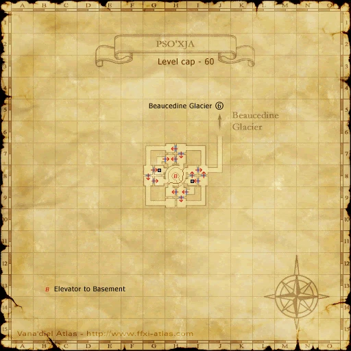

Upper Jeuno


Ru'Lude Gardens


Batallia Downs


Lower Delkfutt's Tower


Metalworks


Zone guides
- La Theine Plateau
- Beaucedine Glacier
- Pso'Xja
- Upper Jeuno
- Ru'Lude Gardens
- Batallia Downs
- Lower Delkfutt's Tower
- Metalworks
References
Steps are an original summary of the linked walkthrough and reviewed source. Other servers’ bonus rewards are not included. How to read requirements, waits and battlefield notes.